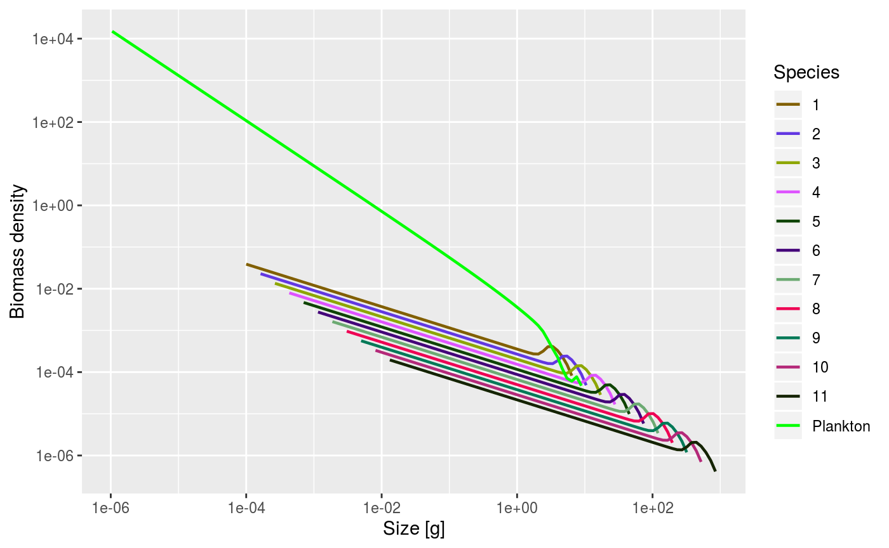
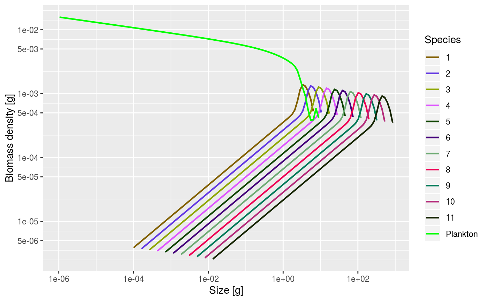
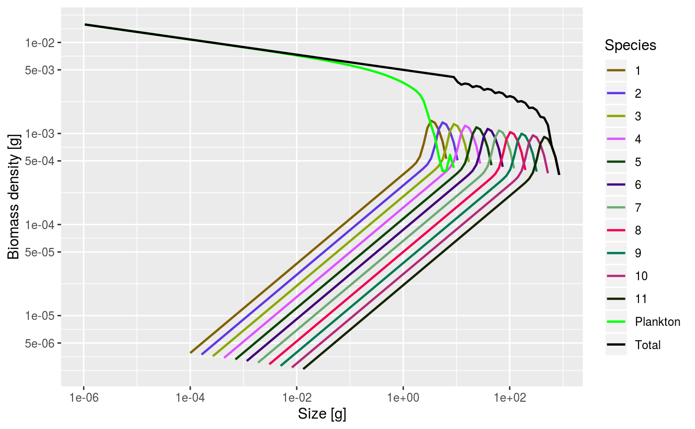
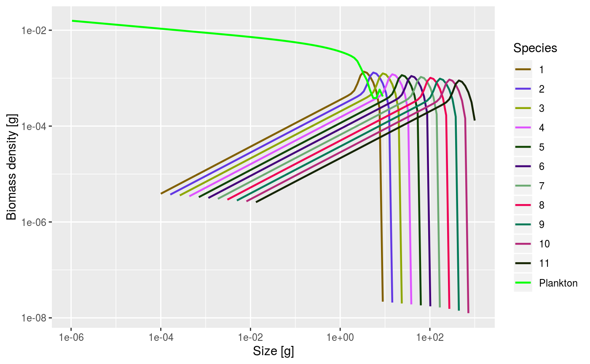
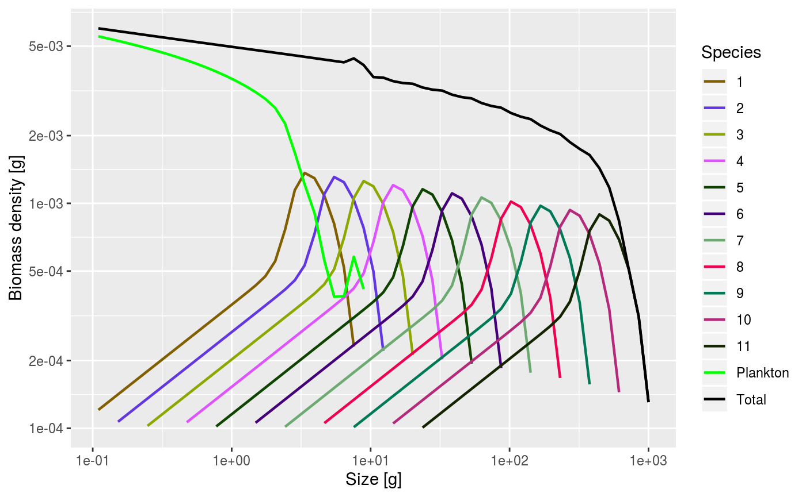

vignettes/build_model_1.Rmd
build_model_1.Rmd## Installing package into '/tmp/RtmpgP8QHL/temp_libpath417e55a379fa'
## (as 'lib' is unspecified)## Downloading GitHub repo sizespectrum/mizer@master##
##
checking for file ‘/tmp/RtmpPkLKyt/remotes457b7968ec2d/sizespectrum-mizer-9243411/DESCRIPTION’ ...
✓ checking for file ‘/tmp/RtmpPkLKyt/remotes457b7968ec2d/sizespectrum-mizer-9243411/DESCRIPTION’
##
─ preparing ‘mizer’:
##
checking DESCRIPTION meta-information ...
✓ checking DESCRIPTION meta-information
## ─ cleaning src
##
─ checking for LF line-endings in source and make files and shell scripts
##
─ checking for empty or unneeded directories
##
─ looking to see if a ‘data/datalist’ file should be added
##
NB: this package now depends on R (>= 3.5.0)
##
WARNING: Added dependency on R >= 3.5.0 because serialized objects in serialize/load version 3 cannot be read in older versions of R. File(s) containing such objects: 'mizer/data/Baltic_params.RData' 'mizer/data/Barents_params.RData' WARNING: Added dependency on R >= 3.5.0 because serialized objects in serialize/load version 3 cannot be read in older versions of R. File(s) containing such objects: 'mizer/data/Benguela_params.RData' 'mizer/data/NEUSCS_params.RData' WARNING: Added dependency on R >= 3.5.0 because serialized objects in serialize/load version 3 cannot be read in older versions of R. File(s) containing such objects: 'mizer/data/NS_params.rda' 'mizer/data/NS_species_params.RData' WARNING: Added dependency on R >= 3.5.0 because serialized objects in serialize/load version 3 cannot be read in older versions of R. File(s) containing such objects: 'mizer/data/NS_species_params_gears.RData' WARNING: Added dependency on R >= 3.5.0 because serialized objects in serialize/load version 3 cannot be read in older versions of R. File(s) containing such objects: 'mizer/data/NorthSea_params.RData'
##
─ building 'mizer_1.0.1.9000.tar.gz'
##
## ## Installing package into '/tmp/RtmpgP8QHL/temp_libpath417e55a379fa'
## (as 'lib' is unspecified)The purpose of this course is for all of us to share our experiences and insights into the mizer model and to all contribute to the future plans for the platform.
My role is to introduce you to a few of the features of the next version of mizer and in particular to show you how to use them to build mizer models from scratch more easily than may have been possible in the past.
The way the practical sessions are organised is that I run through these R notebooks while you are watching and give my running commentary. Then I hand over to you and you will do further explorations, possibly building on the examples I have run through. During that time I hope there will be a lot of discussion and of helping each other.
The place to find out about the next version of mizer is https://sizespectrum.org/mizer/dev/. Note the “dev” in the URL. If it is missing, you are looking at the old version. You can also identify the pages of the development version by the red version number in the navigation bar.
As you browse the website, you will frequently come across mistakes or unclear sections. You would do us all a big favour if you could correct the mistakes and improve the explanations. Most pages have an “Edit this page” link underneath the page title. This will allow you to edit the page straight in your browser and contribute your changes via a pull request on GitHub.
We now start going through some of the recent changes in mizer. But first let’s make sure mizer is loaded. We also load tidyverse, because we find it convenient.
## ── Attaching packages ───────────────────────────────────────────────────────────────── tidyverse 1.3.0 ──## ✓ ggplot2 3.2.1 ✓ purrr 0.3.3
## ✓ tibble 2.1.3 ✓ dplyr 0.8.3
## ✓ tidyr 1.0.0 ✓ stringr 1.4.0
## ✓ readr 1.3.1 ✓ forcats 0.4.0## ── Conflicts ──────────────────────────────────────────────────────────────────── tidyverse_conflicts() ──
## x dplyr::filter() masks stats::filter()
## x dplyr::lag() masks stats::lag()As you know, the specification of a mizer model is stored in an object of class MizerParams, which has many slots holding the various rate functions and other parameters. In this notebook we will always use the name params for the variable holding our MizerParams object. This object now has slots params@initial_n, params@initial_n_pp and params@initial_B holding the initial values for the fish abundances, the plankton abundances and the unstructured resource biomasses, respectively. (The unstructured resources are another new feature, very much in the experimental stage, that we will discuss later.)
To illustrate this, let us create a scaling model.
## Note: Using f0, h, lambda, kappa and the predation kernel to calculate gamma.Many of the mizer plot functions that used to work only for MizerSim objects (the objects holding the results of a simulation run) now also work with MizerParams objects, and plot the initial state stored in the params object.

We see that the model consists of 11 species, with each species having a size- distribution that is just a translated version of the others. The axes are on log scales, so a translation in the graph corresponds to a scaling in the variables. This motivates the name “scaling model”. It is a trait-based model of the kind that Ken will discuss in his lectures.
The plotSpectra() function also has a new parameter power that can be used to look at the size spectra in the different ways already discussed by Ken. With power = 2 you get the Sheldon spectrum, because the function then plots the abundance density multiplied by size to the power 2.

If you are wondering what motivates the drop-off in the plankton abundance and then the low abundance of the species: let’s plot also the total abundance.

We see that the abundances were chosen so that the sum of plankton and fish abundances produce the Sheldon power-law spectrum, at least initially. If there were an infinite number of species continuing to the right, then they would sum up to the power law everywhere. As it is, the total abundance drops off.
The larger species also have fewer predators than the smaller ones and the largest species have no predation mortality at all. The scaling model compensates for this by putting a larger background mortality on the larger individuals so that the total mortality follows the power law. Thus these species experience a power-law of prey and hence a power-law of growth as well as a power-law death. This is why we can write down an analytic solution for their steady-state abundances, which is what is used as the initial condition.
However, due to the fact that there is only a discrete number of species and a discrete set of weight classes, there are some discretisation errors and the analytic solution is not exactly the solution of the numerical mizer model. To find the later, we can use the function steady() that runs the model dynamics until the system is close to steady.
## Steady state was reached before 15 years.We see that it did not take long to reach the steady state, which is because we started off so close to it already.
Note how the steady() function again returns a MizerParams object, just with updated initial values.

Let’s zoom in on the interesting region.

Now over to you. Play with the parameters of the set_scaling_model() function, in particular the exponents n and q, and see if the effects on the community conform with your expectations. Does the system always reach a nice steady state?
In case you have not worked in an R notebook before: you can insert a new code chunk by clicking the Insert Chunk button on the toolbar or by pressing Ctrl+Alt+I. When you click the Run button or press Ctrl+Enter, the code in the chunk is executed and the results displayed underneath.